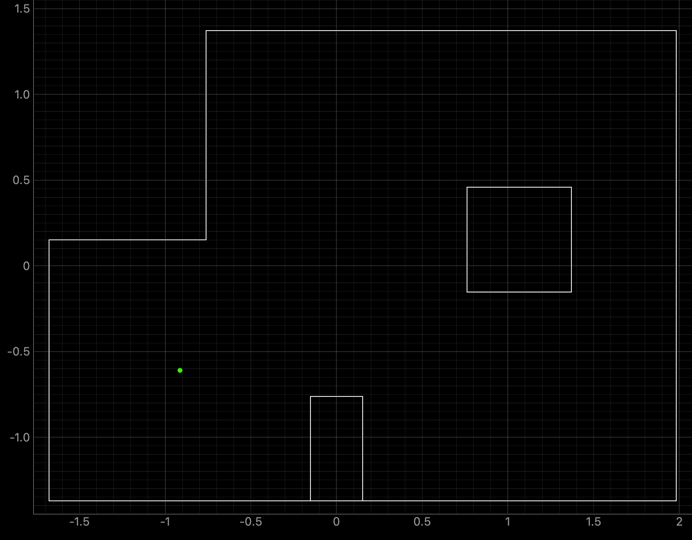
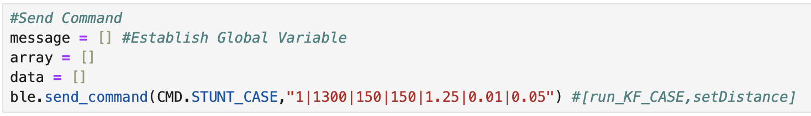
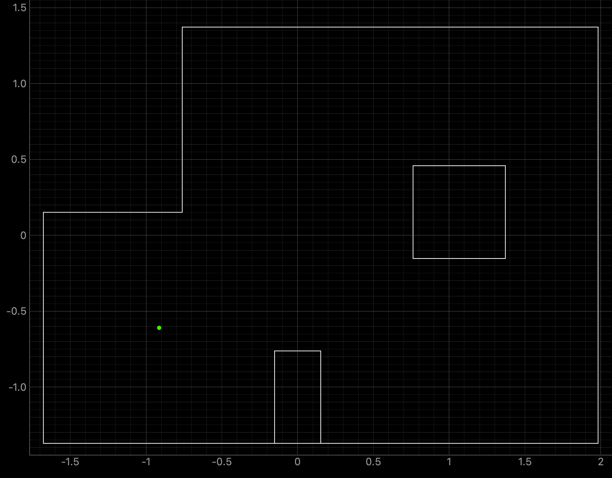
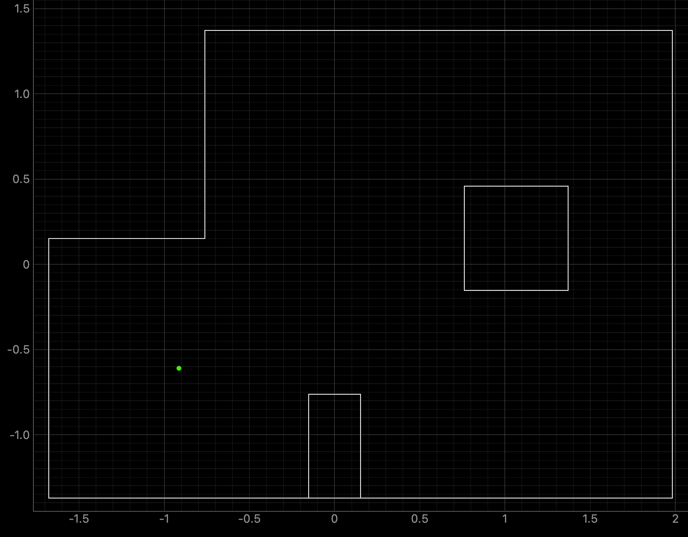

Write functions to compute the control, odometry motion, prediction step,
sensor model, and update step.
Lab 11
Localization on Robot
Compare the Belief and Ground Truth
Lab 11: Localization On The Robot
The objective of the lab is to implement the Bayes Filter on the real robot. Due to noise when
the robot is turning, only the update step of the filter will be be used during a 360 degree
scan.
Lab Tasks
Simulation Localization
The first lab task was to run the provided Bayes Filter simulation. The lab11_sim.ipynb file was
downloaded and a screenshot of the final result is below as well as a
link to the data
from the simulation.
The red line is odometry, the green line is the ground truth, and the blue line is the
belief. The map is a three dimensional grid (x, y, theta). The dimension of x is 12, the dimension
of y is 9, and the dimension of theta is 18.
Run Robot Localization
The results of rotating the robot at the four marked positions are below. The four marked positions
include: (-3ft, -2ft, 0deg), (0ft, 3ft, 0deg), (5ft, -3ft, 0deg), and (5ft, 3ft, 0deg). The robot
was run around 4-5 times at each point. Two runs for each point are shown below. The ground truth
is plotted as the green dot and is the location where the robot rotated. The belief of the robots
position is plotted as the blue dot. The ToF sensor used to collect distance readings was located
on the front of the robot, between the left and right sides of the robot. When the robot was at
zero degrees the ToF sensor was pointed towards the rightside wall. The robot turned counterclockwise
in the same manner as in Lab 9. The Jupyter Notebook code to plot each Ground Truth value is below:
Bottom Left Point (-3ft, -2ft, 0deg):
Graphs for the Belief (blue) and the Ground Truth (green):

For the bottom left point, the Belief was at the same point as the Ground Truth.
As can be seen in the below polar plot, the robot sensed the surrounding walls very well.
I reran the rotation several (5) times and this point had the most rotations result in the
Belief being the same as the Ground Truth. This is a result of the several walls surrounding
the robot when rotating. The next run shows one of the runs where the Belief was different
then the Ground Truth.
Polar Plot and recorded data below:
Top Middle Point (0ft, 3ft, 0deg):
Graphs for the Belief (blue) and the Ground Truth (green):
For the top middle point, the Belief was at the same point as the Ground Truth.
I was surprised to achieve this result as there are not a lot of nearby walls to use for
localization and I suspected that this would be the hardest point to localize. As can be
seen in the below polar plot, the robot was able to sense the surrounding walls and obstacles.
Polar Plot and recorded data below:
Bottom Right Point (5ft, -3ft, 0deg):
Graphs for the Belief (blue) and the Ground Truth (green):
For the bottom right point, the Belief was at the same point as the Ground Truth.
As can be seen in the below polar plot, the robot rotated well and was able to sense the
surrounding walls and obstacles.
Polar Plot and recorded data below:
Lab 10: Grid Localization Using Bayes Filter
The objective of the lab is to use the Bayes Filter to implement grid localization.
Before starting the lab, I familiarized myself with how the Bayes Filter worked and how to
implement the Bayes filter for the robot in simulation. Localization and of the robot determines
where the robot is in the enviroment. There is a predition and update step
of the Bayes filter. The prediction step uses the control input and accounts for the noise
from the actuator to predict the new location of the robot. After the prediction step, the
robot rotates 360 degrees gathering distance measurement data. The update step uses the gathered
distance measurements to determine the real location of the robot. The Bayes Filter from Lecture 16
is below:
The dimensions of each grid cell in the x, y, and theta axes are 0.3048 meters, 0.3048 meters,
and 20 degrees. The grid is (12,9,18) in three dimensions, totalling 1944 cells. The discritized
grid map is:
(-1.6764,+1.9812) meters or (-5.5,6.5) feet in the x-axis
(-1.3716,+1.3716) meters or (-4.5,4.5) feet in the y-axis
(-180,+180) degrees in the theta-axis
Lab Tasks
Implementation
Five functions were written to run the Bayes Filter as outlined below.
Compute Control
The control information from the robot is used to find the first rotation, translation, and
second rotation. The inputs include the current position (cur_pose) and the previous position
(prev_pose). The return values include the first rotation (delta_rot_1), the translation
(delta_trans), and the second rotation (delta_rot_2). The Lecture 17 slide with the equations
to find the odometry model parameters is below:
The above equations were modeled in Jupyter Notebook. The code is found below. First the
differences in the y and x positions are found (y_comp and x_comp). Then the normalized rotations
are calculated as well as the translation.
Odometry Motion Model
The odometry motion model finds the probability that the robot performed the motion that was
calculated in the previous step. The inputs include the current position (cur_pose), previous
position (prev_pose), and odometry control values (u) for rotation 1, translation, and rotation
2. The return value is the probablility ( p(x'|x,u) ) that the robot achieved the current
position (x'), knowing the previous position (x) and odometry control values (u). A Gaussian
distribution is used. Each motion is assumed to be an independent event. The probability of
each event is then multiplied together to find the probability of the entire motion. The Jupyter
Notebook code is found below.
Prediction Step
The prediction step of the Bayes Filter as implemented in Jupyter Notebook uses six for loops
to calculate the probability that the robot moved to the next grid cell. The inputs include the
current odometry position (cur_odom) and the previous odometry position (prev_odom).
The if statement in the pediction step code is
used to speed up the filter. If the belief is less than 0.0001 than the three remaining
for loops will not be entered as the robot is unlikely to be in the remaining grid cells. If
the belief is greater than or equal to 0.0001 the probability will be calculated. The code for
calculating the probability is below.
Sensor Model
The sensor model function finds the probability of the sensor measurements, modelled as a
Gaussian distribution. The length of the array is 18 as the robot measures 18 different distance
reading values. The input includes the 1D observation array (obs) for the robot position. The
function returns a 1D array of the same length including the likelihood of each event (prob_array).
The Jupyter Notebook code is below.
Update Step
The update step calculates the belief of the robot for each grid cell. The probability ( p(z|x) )
is multiplied by the predicted belief (loc.bel_bar) to find the belief (loc.bel). The belief is
then normalized. The code can be found below.
Simulation Results
Two runs of the Bayes Filter simulation are found below. The green line is the ground truth,
the blue line is the belief, and the red line is the odometry measurements. The lighter grid
cells represent a higher belief. For both runs the ground truth and the belief are close
together. Both runs were 15 iterations.
Run 1 Results
Run 2 Results
Lab 9: Mapping
The objective of the lab is to use yaw angle measurements from the IMU sensor and distance
readings from the ToF sensor to map a room. The map will be used during localization and navigation
tasks. Map quality depends on how many readings are obtained and the separation between each
reading during each rotation.
Lab Tasks
Orientation Control
Orientation Control was chosen as the PID controller for the lab. The PID controller
results in the robot performing on-axis turns in 10 degree increments. The ToF sensor used
to collect distance readings is located on the front of the robot between the left and right
motor sides.
Code For Orientation Control
First
the distance is found using the readings from the ToF sensors, then the yaw angle is found
using the IMU sensor. The PID controller value is used in the RIGHT_MOTOR and LEFT_MOTOR
functions to determine the motor input value. If the error between the current yaw angle
and the setAngle (10 degrees) is less than -0.5 degrees or greater than 0.5 degrees then
the RIGHT_MOTOR and LEFT_MOTOR functions will run. The "stop" variable is set to be 360
divided by the "setAngle" variable, which is equal to 10. The results in stop = 36
increments. If variable "end" is less than "stop" the robot will stop for one second.
I stopped the robot for one second to ensure that the ToF sensor is pointed towards a
fixed point in space.
The total yaw angle is recorded by adding the current total to the current yaw value (yaw_arr).
The yaw value is then set to zero for the next iteration of the while loop. Resetting the
yaw value for the IMU sensor reduces gyroscope drift.
If the "end"
value is greater than or equal to the "stop" value the robot will stop and no new data will
be recorded into the yaw_arr array.
The Jupyter Notebook command and Arduino case to start the PID orientation controller are
below. From testing I found that using a Kp value of 1, Ki value of 0 and Kd value of 0
worked to move the robot in 10 degree increments. Each time the PID orientation controller
starts, yaw[0], yaw_arr[0], and the total are set to zero. In addition the stop variable
is found. Graphs showing the changing yaw angles to confirm the PID controller works are
found in the next section.
Video and PID Control Graphs
Two videos of the robot turning are below. The robot roughly turns on axis. In the second
video, the robot overshoots at some increments but is able to correct itself to the correct
angle. The robot stays inside of one floor tile for the duration of the turn.
Turn 1:
Turn 2:
I plotted the values of yaw for each 10 degree increment. As can be seen in the below graph
the PID controller works as expected. After yaw increases to 10 degrees, the value of yaw
is reset to zero and then again increases to 10 degrees for the next increment. The slight
variation in the final yaw value is due to the -0.5 to 0.5 degree tolerance.
The total angle values were found by adding each final yaw value (between 9.5 and 10.5
degrees) to a summation of all previous yaw values. The values and graph for an example
turn are found below.
In the above graph as the turn progresses the angles remain accurate as the summation
calculation is correct to the yaw reading of the robot, but the angles slightly vary from
the ideal 360 degree turn values. To address this I also performed half turns from 0 to 180
degrees, and 180 to 360 degrees. The angle values and corresponding graphs can be found
below:
The half turns in the above graphs are more in line with the ideal angles. When testing the
robot in the lab, I collected angle data for full turns and half turns.
Read Out Distances
Execute Turn At Each Marked Position
The robot was placed at each of the following points: (-3,-2), (0,0), (0,3), (5,3), and (5,-3).
The image below shows each of the points in the lab.
The distance was measured using the front ToF sensor between the left and right motor sides.
The data collected was sent over Bluetooth to Jupyter Notebook to be plotted. The robot
was started in the same orietation, facing the right side wall of the lab, for each full
turn and each half turn starting at zero degrees. For half turns starting at 180 degrees,
the robot started facing the left side wall. The range of potential angle values for each
ideal 10 degree rotation is 9.5 degrees to 10.5 degrees. There is a -/+ 0.5 degree range
for the robot to stop and collect a distance measurement. Due to the range of degree values,
it can not be assumed that the robot will stop at exactly 10 degrees every time it rotates.
To address this issue, I did not assume that the robot stopped at exactly
10 degrees for every rotation and instead recorded a "total" variable value that added the
angle that the robot stopped at to the previously recorded stopping angle. This allowed me
to plot the distance measurements with the correct recorded angles.
Polar And Global Frame Plots
This section details the second attempt at collecting data at each point. The data collected
for each point in the lab is plotted in the below graphs. I readjusted the ToF sensor to point
more upwards before collecting the following data. This adjustement removed noise from inside
the map region. The data collected for each point in the lab is plotted in the below graphs.
Bottom Left: Point (-3,-2)
Middle: Point (0,0)
Top Middle: Point (0,3)
Top Right: Point (5,3)
Bottom Right: Point (5,-3)
Merge And Plot Readings
I plotted the distances in the global frame using a
transformation matrix to convert the frame of the robot used to collect the sensor measurements
into the global frame.
Below are the distance readings in the global frame.
Convert To Line Based Map
After plotting the above graph I plotted lines representing the walls of the map. The plot showing
the line based map is below as well as the code used to plot each line.
Lab 8: Stunts
The objective of the lab is to implement a stunt on the robot using the knowledge gained from
previous labs. Labs 5-8 detail PID,
sensor fusion, and stunts. This lab is focused on using the ToF sensor and IMU sensor to drive
the robot forward and then turn 180 degrees when the robot is within 3ft (914mm) of the wall.
Task B: Orientation Control will be implemented on the robot.
My inital approach to the orientation control stunt was to break down the stunt into three
separate parts: driving towards the wall, turning, driving away from the wall. When driving
straight towards the wall the robot uses PID control on the speed before slowing down and
turning. The speed PID control function can be found below:
After the robot is within 3ft of the wall, PID control on orientation is used to turn the robot
180 degrees. The PID control value is determined by the yaw angle reading from the IMU sensor.
If the PID control value is positive the wheels on the right side of the robot will move forwards
and the wheels on the left side of the robot will move backwards.
If the PID control value is negative the wheels on the right side of the robot will move backwards
and the wheels on the left side of the robot will move forwards.
The orientation PID control function can be found below:
The above two functions were called inside of the while loop. If the distance error is greater
than zero, the speed PID control function is called. If the distance error is less than zero
the orientation PID control function is called to turn the robot. The while loop can be found
below:
Before implementing the final part of the task (driving away from the wall), I ran the above
Arduino script. The inputs included a start/stop integer (1/0); a setDistance for the robot
to start turning; and the Kp, Ki, and Kd PID values. While running the Arduino IDE code
multiple times with different setDistance values (914mm-1300mm) and PID values, the robot
did not perform in the expected manner. The robot would often either hit the wall or turn too
late even when inputting larger setDistance values. In addition, the robot turned too slow
whe inputting smaller Kp values (such as 0.5), or would spin multiple times when inputting
larger Kp values (such as 2).
Videos showing the behaviour of the robot are below:
The robot hits the wall before turning (setDistance = 915mm, Kp = 0.5):
The robot stops before hitting the wall, but turns too slowly during orientation control
(setDistance = 1100mm, Kp = 0.5):
When a high value of 2 was used for Kp, the robot would spin too fast and not correct itself:
In addition, there were some bad runs that resulted in the robot turning towards the right
immediately after starting the stunt due to the input PWM values:
After continuously testing the robot, I decided to write a new Arduino IDE script that only
used orientation control. The robot runs towards the wall at a constant speed, and within
the desired setDistance turns 180 degrees and moves away from the wall.
Second Approach
Driving Straight
I first started
working on implementing orientation control while the robot is driving forwards. Orientation
control when the robot is driving forwards keeps the robot moving in a straight line. The robot
is set to run at a base speed and PID control using the readings from the IMU correct the
orientation of the robot to keep the robot at the starting yaw angle. Yaw was initially set
to zero each time the case ran. Below are some videos of the robot being tested using orientation
control at low speeds. Initially I tested the robot using the calibration factor of 1.1667
found in Lab 4, setting a base speed of 80 for pin 12 and 93 for pin 9. I found that setting
each side of the robot to different speeds resulted in the robot moving towards the right
or left as can be seen below:
I decided to set both pins to the same PWM value of 80 that resulted in the robot moving
straight, as can be seen below:
Code and Turning
I added to the code for orientation control to make the robot turn 180 degress, rather than
stopping as in the previous step. Initially yaw is set to zero and a base speed of 150 PWM
was used for the motors on both sides of the robot. I tested various values for the
setDistance and found that 1300mm allows the robot to recognize the wall with enough time
to turn 180 degrees within 3ft and drive away from the wall. The Arduino code that runs
inside the while loop is below. First the distance reading from the ToF sensor is found and
used to calculate the error between the ToF sensor measurement and the setDistance. Then
the yaw angle is found using the IMU and the error between the yaw reading and the desired
setAngle is calculated. The yaw angle is used to find the orientation PID control value.
If the distance error is less than zero (robot is past 1300mm) and the setAngle equals 0,
the setAngle will be changed to 180. If the orietation error is greater than or equal to -3,
or less than or equal to 3, the left and right side motors will be set to the base speed.
If the previous condition is not met, the left side motor will be set to the base speed
minus the PID control value and the right side motor will be set to the base speed added
to the PID control value. The code inside the while loop is found below:
The RIGHT_MOTOR and LEFT_MOTOR functions are below:
The Arduino cases and Jupyter Notebook commands for STUNT_CASE and SEND_STUNT_DATA are below.
The ToF distance sensor starts ranging, yaw is set to zero, endTime is found, and
previousTime_0 is found when the run_STUNT_CASE is set to 1.

Stunt Videos and Graphs
The three working stunt videos are found below. The base speed is 150 for both motors,
setDistance is 1300mm, Kp = 1.25, Ki = 0.01, and Kd = 0.05. The stunt takes around 4 seconds
to run.
Below are graphs showing the ToF distance readings, yaw angles, and motor input values.
The graphs show that the robot turns before hitting the wall.
Run 1:
Run 2:
The below video shows the serial monitor outputs for the code used to run the stunt.
y: yaw angle in degrees
sL: speed of left side in PWM
sR: speed of right side in PWM
d: distance in millimeters
e: distance error in millimeters
a: setAngle in degrees (this is the desired angle used to find the error in orientation)
eo: yaw angle error
PID_O: orientation PID control value
When the setAngle changes the PID control value changes, which changes the speed of the motors.
Lab 8 References
Thank you to all of the TAs that answered my questions. I referenced the past lab reports of
Liam Kain, Rafael Gottlieb, Larry Lu, Julian Prieto, and Ignacio Romo.
Extra Credit: Implement Kalman Filter On Robot
I implemented the Kalman Filter on the robot for extra credit. To complete this task I needed
to install the Basic Linear Algebra Library on Arduino IDE.
To implement the Kalman
Filter I first created two new cases in Arduino IDE: KF_DATA and SEND_KF_DATA. These cases
are similar to the cases used to start/stop the PID controller and send PID controller data,
but I added array's for Kalman Filter time (KF_Time) and the Kalman filter distance
(mu_Store). I added a delay in KF_CASE before running the while loop. When I was testing the
filter I was repeatedly starting with distances of 0mm. The delay after the ToF distance
sensor starts ranging reduces the amount of 0mm distance readings when starting the filter.
The Arduino cases and Jupyter Notebook commands can be found below:
After creating the cases for the Kalman Filter, I then started working on writing a Kalman
Filter function in Arduino IDE. The final initialization of the matrices is below:
Step 1: Kalman Filter Function
The first function that I wrote for the lab was the function Kalman_Filter() that is called
from inside the larger while loop. To perform this task, I referenced the Jupyter Notebook
code I wrote for Lab 7 and modified the code for the Arduino IDE syntax. The function can
be seen below:
The Ad (discritized A) and Bd (discritized B) matrices are updated each time the Kalman Filter
is called to use the most recent dt value. I printed the dt (time difference) values to the
Serial Monitor and observed that the dt values slightly varied each time the while loop ran.
The variable dt is how fast the while loop runs and ranged from around 10ms to 25ms. After
finding Ad and Bd, mu_p and sigma_p are calculated. The if statement of the filter is the
update step and runs when there is a new TOF sensor reading (newTOF == 1). The else statement
is the prediction step and assigns the mu_p value to mu and the sigma_p value to sigma.
During both steps the first value for mu is stored in the array mu_Store.
Step 2: Kalman Filter Update Step On Robot
Using ToF Readings For PID Loop
I started working on the calling the Kalman Filter from inside the while loop by modifying
the script for my PID controller. After finding the ToF sensor readings and running the PID
controller within the larger while loop, I added an if statement inside the loop to call the
Kalman Filter to find the update values. The if statement runs if dStart == 1 and
if the currect distance value is not equal to the previous distance value. The variable dStart
is set to 1 if the new ToF sensor distance is not the same value as the previous sensor distance.
If the current distance reading is the same as the previous distance reading dStart is set to 0.
The if statement to call the update of the Kalman Filter is below:
The PID controller was run using values of Kp = 0.05, Ki = 0.0000008, and Kd = 0.5. A test run
showing the plotted ToF data and the Kalman Filter updates is shown below. It can be seen that
the Kalman Filter updates align with each new reading of the ToF sensor.
The video below shows the Serial Monitor outputs for the ToF distance readings and the update
values:
The full while loop code for this section is below:
The FORWARD() Function that was used previously for PID control is below:
The BACKWARD() Function that was used previously for PID control is below:
After successfully implemeting the update step of the Kalman Filter, I started working on
the prediction step.
Step 3: Kalman Filter Update and Prediction Steps On Robot
Using ToF Readings and Predicted Distances For PID Loop
I started the next step by removing the PID control from the larger while loop and creating
a separate function called PID_Function(). A separate function for PID control allowed for
me to more easily switch the order to performing the Kalman Filter before the PID controller.
Previously the PID controller used the ToF sensor measurements every time the loop ran. In
the new iteration of the code, if the update step of the filter runs, the distance measurement
used will be the ToF sensor reading. If the prediction step runs the most current value of mu
will be used in the PID controller. The if and else statements for the update and prediction steps
are shown below. The variable dis is the
distance measurement used in the PID controller. The u value for the Kalman Filter was calculated
the same as in Jupyter Notebook using the PID control values.
The PID_Function is below:
The PID controller was run using the same Kp, Ki, and Kd values as the previous section. An initial test run
showing the plotted ToF data and the Kalman Filter updates is shown below. The graphs show that the filter is
predicting distances between ToF readings, but the predicted values do not follow the trend of the data
towards the next update value.
To address the above issue, I multiplied the B matrix by 3 and again tested the robot. The graphs below show
that multiplying matrix B by 3 did not significantly change the predicted values.
I then multiplied the B matrix by 6 and achieved the below results. The predicted values trend downwards, but
still do not reach the update values.
Throughout more testing, I determined that a good value to multuiply the B matrix with is 8. The Kalman Filter
updates align with each new reading of the ToF sensor and the prediction values follow the trend of the data.
Below are two sets of graphs showing data that was recorded after the B matrix was multiplied by 8. Needing to
multiply the B matrix by 8 indicates that the value found for m during the Jupyter Lab simulation does not work
as well when implementing the Kalman Filter on the robot.
Test 1:
Test 2:
In addition during testing, I accidentally set the robot to a higher speed than necessary and the robot
ran into multiple walls and did not always travel in a straight line for the below run. I decided to run the collected data
through the Kalman Filter to see the outcome. The graphs below show that the update values and some of
the predicted values align with the recorded ToF data. The Kalman Filter is able to update to the correct
ToF value, even during somewhat random running conditions.
The video below shows the Serial Monitor outputs for the ToF distance readings and the update
values:
Below is an example run of the Kalman Filter on the robot:
The full while loop code for this section is below:
Issues and Mistakes During Implementation
While I was implementing the Kalman Filter onto the robot I was able to work through most
of the debugging in an efficient manner. One mistake that I made early during implementation
was not converting dt to seconds which caused my predicted values to drastically increase or
decrease. Initially I thought that there was a problem with my sigma values and spent time
changing the sigma values to see if there was any change. This did not work and I discovered
the issue with dt during office hours.
Extra Credit References
Thank you to all of the TAs that answered my questions. I referenced the past lab reports of
Liam Kain, Rafael Gottlieb, Larry Lu, Julian Prieto, and Ignacio Romo.
 
